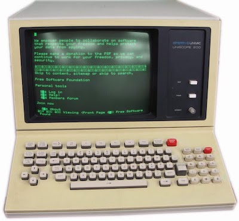
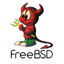

El sistema operativo Linux¶
Sistemas operativos¶
Un sistema operativo es el conjunto de programas para resolver tareas de “intendencia” y realizar las operaciones más básicas en nuestro ordenador.
Supongamos, por ejemplo, que estamos trabajando con un procesador de textos y en un momento determinado pulsamos en el menú Archivo > Guardar. Para llevar a cabo esta operación hay que controlar que parte del disco está ocupada por otros archivos, si ya hay otro archivo con el mismo nombre, como están organizadas las carpetas, y un montón de cosas más. Todo este trabajo lo hace el sistema operativo, y el procesador de textos se limitará a pasarle la información a guardar. En todo momento, los programas que estamos ejecutando están comunicándose con el sistema operativo y beneficiándose de los servicios que proporciona, como es el caso de la gestión de almacenamiento en disco.
Veamos otro ejemplo. Estamos navegando por Internet, seleccionamos parte del contenido de una página web y hacemos una operación de copiar y pegar al procesador de textos. ¿Como es posible que el navegador web y el editor de textos se pongan de acuerdo para colaborar entre ellos? Son programas independientes el uno del otro, creados por profesionales que no tienen relación entre sí. Pues bien, el sistema operativo de nuestro ordenador es quien se encarga de hacer de intermediario gracias a un programa especial llamado portapapeles, que se pone en marcha de forma automática al encender la máquina y se mantiene ejecutándose en segundo plano hasta que la apaguemos.
En todo momento tendremos unos cuantos procesos ejecutándose en la sombra sin que seamos conscientes de ello: gestión de recursos, controladores de dispositivos, almacenamiento en discos, comunicaciones de red, e incluso algún que otro virus probablemente…
El kernel y el shell¶
Para que un ordenador funcione correctamente necesitamos todo ese software instalado en el equipo (sin virus, claro). Generalmente adquirimos el aparato configurado y listo para su uso, pero podemos borrar el disco principal e instalar otro sistema operativo, lo que deja en nuestra máquina lo siguiente:
- un nuevo programa de arranque, que es lo primero que se ejecuta cuando encendemos el ordenador.
- un conjunto de programas básicos de gestión de recursos y procesos, conocido como el “kernel” o núcleo del sistema.
- programas para la gestión de almacenamiento en disco.
- programas para gestión de dispositivos, comunicaciones, etc.
- una colección de programas de utilidad: navegador web, explorador de ficheros, gestor de corrreo, etc.
- un programa que nos permita interaccionar con la máquina, llamado “escritorio”, también conocido como “shell”.
En resumen, un sistema operativo se compone de un kernel, una serie de programas complementarios, y un shell. La palabra shell significa, en inglés, caparazón, o envoltorio, y al programa utilizado para mostrar el escritorio en nuestra pantalla se le llama shell porque es la parte “visible” del sistema operativo:

Hasta la década de los años ochenta del siglo pasado, el shell era un programa que consistía en una consola donde introducir comandos a ejecutar:

De esta forma, es costumbre distinguir entre shells de texto, al estilo antiguo, y shells de tipo gráfico, consistentes en un escritorio con imágenes, iconos, etc. Los sistemas operativos modernos suelen incluir ambos programas, aunque cuando encendemos el ordenador, lo que típicamente se muestra es el shell gráfico.
Linux¶
Linux no es un sistema operativo, sino un kernel. Se trata de un proyecto iniciado en 1991 por un estudiante finlandés llamado Linus Torvalds, y se mantiene como desarrollo comunitario. Véase el repositorio oficial del proyecto aquí, o los archivos de trabajo en la plataforma GitHub.
Para utilizarlo en nuestro ordenador tenemos que complementar este kernel con el resto de programas. De hecho, en la actualidad existen multitud de sistemas operativos que incorporan Linux como núcleo. Android o Chrome OS, por ejemplo, forman parte de la lista. Y no solo ordenadores, sino también otros dispositivos como es el caso de televisores, teléfonos, y toda clase de dispositivos inteligentes.
Linux es un kernel inspirado en UNIX, un sistema operativo ideado a finales de los años sesenta del pasado siglo, que ha llegado a convertirse en una especie de estándar en el mundo de la informática y es muy popular en las grandes instalaciones y servidores.
Antes de UNIX, los sistemas operativos eran un software concebido a la medida de cada fabricante y de cada modelo de ordenador. Esta era una forma muy ineficiente de trabajar, ya que si una empresa quería sustituir sus máquinas por algún modelo más moderno y potente, se veía obligada a revisar y adaptar todos sus programas.
Evidentemente se necesitaba una estandarización. A mediados de la década de 1960 el Massachusetts Institute of Technology (MIT) puso en marcha un proyecto para crear un sistema operativo universal. En esta iniciativa participaron los Laboratorios Bell, una empresa dedicada a la investigación que por aquella época era subsidiaria de la multinacional AT&T.
El proyecto fue bautizado con el nombre de Multics (Multiplexed Information and Computing Service) y pronto surgieron las primeras dificultades y desacuerdos debido a que los resultados obtenidos no iban en la línea deseada. Bell Labs abandonó en 1969.
Era una época en la que no existían los ordenadores domésticos, y los profesionales tenían que dedicar parte de su tiempo a aprender practicando con las máquinas de la empresa. Uno de los ingenieros de Bell Labs, Ken Thompson, había estado desarrollando un juego llamado Space Travel en el ordenador utilizado en el proyecto Multics. Cuando intentó seguir con sus experimentos en los ordenadores de Bell Labs, se vió que se estaba produciendo un alto consumo de recursos, por lo que pidió que le prestaran un viejo DEC PDP-7 que estaba en desuso. Allí había que desarrollarlo todo, empezando por un sistema operativo en miniatura, y Thompson convirtió este reto en una especie de proyecto personal basado en su experiencia en el proyecto Multics.
Poco a poco y con la ayuda de otros colegas, el nuevo sistema operativo fue evolucionando, siendo trasladado a otras máquinas más potentes para comprobar su portabilidad, y convirtiéndose finalmente en un software corporativo, bautizado inicialmente con el nombre de Unics, y definitivamente como Unix.
En principio, los Laboratorios Bell no tenían la idea de comercializar el software, aunque lo patentaron y pusieron a disposición de varias universidades, lo que hizo que muchas personas empezaran a utilizarlo y se implicaran en el desarrollo de Unix. Poco a poco su uso se extendió a la empresa privada, y en 1975 AT&T retiró el permiso para que Unix fuera utilizado libremente, creando una división denominada Unix Systems Laboratories para explotar comercialmente el software bajo el nombre de Unix System V. Mantuvo el negocio hasta 1993 cuando se lo vendió a Novell.
Esta situación dió lugar a que desde la Universidad de Berkeley California surgiera un clon del sistema operativo llamado Unix BSD (Berkeley Software Distribution). Además de Unix System V y UNIX BSD, con el paso del tiempo aparecieron otras versiones, todas ellas basadas en el mismo estándar. IBM, por ejemplo, lanzó AIX en 1986. Sun Microsystems (posteriormente adquirida por Oracle) hizo lo mismo con Solaris, e incluso Microsoft hizo un tímido intento de comercializar un sistema operativo llamado Xenix, aunque con el tiempo descartó el proyecto y prefirió desarrollar Windows. Los ordenadores Apple, por su parte, también apostaron por Unix y en la actualidad los Mac utilizan un derivado de UNIX BSD denominado Darwin, y comercializado como Mac OS.
Para luchar contra todos estos intereses comerciales, un grupo de ingenieros del MIT liderados por Richard Stallmann crearon a principios de los años ochenta la Free Software Foundation, una organización sin ánimo de lucro cuyo propósito es promocionar la libertad en el uso del software, más allá de patentes y restricciones. Uno de los proyectos más notables de esta organización fue impulsar la creación de un sistema operativo libre. Estaba inspirado en el estándar UNIX y fue bautizado con el nombre de GNU, acrónimo de GNU is Not Unix. Su página web es https://www.gnu.org.
GNU se convirtió en un esfuerzo comunitario en el que muchos programadores aportaban sus colaboraciones. Hacia 1990 el proyecto estaba bastante avanzado, pero faltaba la pieza esencial: un kernel. En el proyecto se estaba utilizando uno llamado TRIX, desarrollado por el MIT, que no resultaba adecuado por estar concebido para grandes sistemas, y no tanto para ordenadores personales. Hubo algunos intentos de buscar otra alternativa que no llegaron a cuajar. Finalmente, Linus Torvalds creó en 1991 un kernel al que llamó “Linux”.
Torvalds se inspiró en el libro “Operating Systems: Design and Implementation” (1987), cuyo autor, un profesor de una universidad holandesa llamado Andrew Tanenbaum, explicaba como construir un sistema operativo desarrollando como ejemplo una versión de UNIX en miniatura que había bautizado con el nombre de “Minix”. Torvalds trabajó desde este punto de partida y concibió una versión ampliada y mejorada, que con el paso del tiempo se convirtió en un proyecto colaborativo al que han ido sumándose muchas personas.
GNU adoptó Linux como kernel, pero Torvalds prefirió mantenerse al margen de esa comunidad, y su proyecto sigue desarrollándose como software independiente, presentando periódicamente nuevas versiones ampliadas que son utilizadas como núcleo de muchos dispositivos y sistemas operativos.
Existe una controversia acerca de la denominación de Linux como sistema operativo, que los defensores de GNU prefieren denominar GNU/Linux. Véase artículo en la wikipedia.
Distribuciones¶
Si Linux solo es un kernel, ¿que necesitamos para usarlo en nuestro ordenador? Recopilar el resto de programas, instalar el conjunto en nuestro equipo, y configurarlo para que todo vaya bien. O bien conseguir una recopilación realizada y distribuida por algún colectivo o empresa.
GNU es un ejemplo de sistema operativo completo, pero hay otros basados en el kernel Linux que se distribuyen como software libre. Para conseguir cualquiera de estas “distribuciones” (familiarmente conocidas como “distros” en la jerga informática) basta con acudir a su página web, descargarla, e instalarla en nuestro ordenador.
Una de las peculiaridades del software libre es que podemos utilizarlo a nuestro gusto, hacer copias, modificarlo y redistribuirlo. Podemos tomar una distribución ya existente, introducir algunos cambios, añadir algún programa de nuestro gusto, y de esta forma crear una nueva “distro” bautizada con nuestro nombre, si ese es nuestro deseo. De esta forma veremos que hay distribuciones que están basadas en otras. ¿Cuantas “distros” existen hoy en día? Considerando solo las de cierta relevancia, cientos. Podemos ver un ranking de popularidad en http://distrowatch.com/.
Sin ánimo de ser exhaustivos, veamos una pequeña selección de distros más o menos populares.
Slackware¶
 Es la distribución más antigua de las que existen en activo. Fue creada en 1993, y su filosofía es lograr una réplica de UNIX, sin grandes alardes, sacrificando la vistosidad en beneficio de lograr un sistema estable y sólido. Es una distro popular entre administradores de servidores y grandes sistemas, aunque no deja de ser la “abuela”, y quizás no resulte tan atractiva como otras distribuciones más actuales.
Es la distribución más antigua de las que existen en activo. Fue creada en 1993, y su filosofía es lograr una réplica de UNIX, sin grandes alardes, sacrificando la vistosidad en beneficio de lograr un sistema estable y sólido. Es una distro popular entre administradores de servidores y grandes sistemas, aunque no deja de ser la “abuela”, y quizás no resulte tan atractiva como otras distribuciones más actuales.
Página web: http://www.slackware.com
SuSE¶
 De origen alemán, comenzó siendo una versión de slackware con el propósito de superar esa barrera de austeridad autoimpuesta y convertirse en una recopilación de software lo más completa posible.
De origen alemán, comenzó siendo una versión de slackware con el propósito de superar esa barrera de austeridad autoimpuesta y convertirse en una recopilación de software lo más completa posible.
Siendo una distribución comercial, patrocina una versión comunitaria llamada openSUSE.
Página web de openSUSE: https://es.opensuse.org/
Red Hat¶
 También es una de las pioneras, habiéndose convertido con el paso del tiempo en la distribución comercial por excelencia, orientada al mundo de la empresa. Su página web es https://www.redhat.com/.
También es una de las pioneras, habiéndose convertido con el paso del tiempo en la distribución comercial por excelencia, orientada al mundo de la empresa. Su página web es https://www.redhat.com/.
Red Hat fue adquirida por IBM en 2018.
 De Red Hat se derivan otras muchas, e incluso hay una que patrocinan ellos mismos con el nombre de Fedora, que se mantiene como esfuerzo comunitario y sirve de campo de ensayo para las novedades que posteriormente se trasladarán a RedHat.
De Red Hat se derivan otras muchas, e incluso hay una que patrocinan ellos mismos con el nombre de Fedora, que se mantiene como esfuerzo comunitario y sirve de campo de ensayo para las novedades que posteriormente se trasladarán a RedHat.
Página web de Fedora: https://getfedora.org/es/
 Entre el resto de distros derivadas, una de las más populares es CentOS, cuyo objetivo es librarse de toda referencia comercial.
Entre el resto de distros derivadas, una de las más populares es CentOS, cuyo objetivo es librarse de toda referencia comercial.
Página web de CentOS: https://www.centos.org
Debian¶
 Ante la proliferación de versiones comerciales, en 1993 se puso en marcha un proyecto para lograr un sistema operativo completamente ajeno a intereses de empresas, excluyendo todo software con licencias de uso restrictivas. Debian está considerada la distribución libre por excelencia y otras muchas distros están basadas en ella.
Ante la proliferación de versiones comerciales, en 1993 se puso en marcha un proyecto para lograr un sistema operativo completamente ajeno a intereses de empresas, excluyendo todo software con licencias de uso restrictivas. Debian está considerada la distribución libre por excelencia y otras muchas distros están basadas en ella.
Página web: https://www.debian.org/
Ubuntu¶
 Es posiblemente la distribución Linux más popular. Fue creada en 2004 por una empresa llamada Canonical, con sede en la Isla de Man y patrocinada por el multimillonario sudafricano Mark Shuttleworth. Su propósito es conseguir que todo el mundo tenga acceso a las tecnologías de la información, convirtiendo Linux en un producto con la calidad de otros sistemas operativos comerciales, fácil de usar, y extendido a otros tipos de dispositivos, televisores, teléfonos móviles, etc.
Es posiblemente la distribución Linux más popular. Fue creada en 2004 por una empresa llamada Canonical, con sede en la Isla de Man y patrocinada por el multimillonario sudafricano Mark Shuttleworth. Su propósito es conseguir que todo el mundo tenga acceso a las tecnologías de la información, convirtiendo Linux en un producto con la calidad de otros sistemas operativos comerciales, fácil de usar, y extendido a otros tipos de dispositivos, televisores, teléfonos móviles, etc.
Es una distribución basada en Debian. Su página web es https://www.ubuntu.com
Mint¶
 De entre las distribuciones basadas en Ubuntu, posiblemente Mint sea una de las más populares, por su facilidad de uso, su solidez y estabilidad, y por llevar de serie complementos que en otras distribuciones solo se incluyen opcionalmente por tener licencia propietaria.
De entre las distribuciones basadas en Ubuntu, posiblemente Mint sea una de las más populares, por su facilidad de uso, su solidez y estabilidad, y por llevar de serie complementos que en otras distribuciones solo se incluyen opcionalmente por tener licencia propietaria.
Página web: https://linuxmint.com
Arch¶
 Las primeras distribuciones eran simples recopilaciones de software destinadas a un usuario con los suficientes conocimientos técnicos como para instalar y configurar su equipo. Con el paso de los años, la mayoría de las “distros” han evolucionado convirtiéndose en paquetes con una calidad similar a los sistemas comerciales, acercándose al usuario medio e incorporando toda clase de mecanismos automatizados para gestionar nuestro equipo e instalar nuevo software.
Las primeras distribuciones eran simples recopilaciones de software destinadas a un usuario con los suficientes conocimientos técnicos como para instalar y configurar su equipo. Con el paso de los años, la mayoría de las “distros” han evolucionado convirtiéndose en paquetes con una calidad similar a los sistemas comerciales, acercándose al usuario medio e incorporando toda clase de mecanismos automatizados para gestionar nuestro equipo e instalar nuevo software.
Arch fue creada en 2002 como respuesta a la creciente complejidad de las distribuciones, y su filosofía es presentar un entorno sencillo y orientado a usuarios avanzados que les guste “trastear” y configurar el sistema a mano.
Página web: https://www.archlinux.org
FreeBSD¶
Es una versión libre de Unix BSD. Podemos encontrarla en su página web https://www.freebsd.org.
Escogiendo una distribución¶
En líneas generales, el principal factor a tener en cuenta es la experiencia de usuario, ya que las aplicaciones que instalemos, tales como procesador de textos, visor de fotografía, videos, navegador de internet o gestor de correo suelen ser comunes a todas las distros.
Hay distribuciones más amigables y fáciles de configurar, mientras que otras están orientadas a usuarios técnicos. Algunas son comerciales y otras excluyen todo rastro de programas con licencia propietaria e imagen de marca. Unas son más austeras y otras más vistosas, aunque más consumidoras de recursos, como contrapartida.
Podemos ver un análisis comparativo. Mirándolo con detenimiento, veremos algunas cosas que las diferencian. Para empezar, cada distribución tiene su propio programa para automatizar el proceso de instalación. Suele ser un asistente que nos va guiando durante el proceso de forma cómoda, aunque algunas distribuciones, como es el caso de Arch o Slackware, se basan en un entorno bastante austero y técnico. Entre las que cuentan con instalador gráfico tenemos:
- Redhat, Fedora y derivados disponen de un programa instalador llamado Anaconda.
- Debian tiene su propio programa Debian Installer.
- Ubuntu y derivados como Mint tienen un instalador llamado Ubiquity.
- SuSE y derivados utilizan el programa YaST.
Otra cosa que diferencia a las distribuciones es su repositorio de software. Si queremos añadir nuevos programas, basta con acudir a un servidor donde encontraremos miles de paquetes de software, escoger uno, y pulsar sobre un botón para instalarlo. Los repositorios de RedHat, Ubuntu, Debian y Suse están entre los más grandes. De todas formas, también podemos obtener programas descargándolos directamente de su página web, con lo que además obtendremos la versión más reciente. Los repositorios oficiales de las distribuciones no siempre tienen la versión más actualizada de cada cosa.
Además, cada repositorio sirve los programas en un formato diferente. Algunos vienen empaquetados en un simple archivo .zip que podemos descargar y desempaquetar en nuestro disco, aunque hay otros formatos muy populares, como es el caso del formato .deb, usado por Debian, Ubuntu y Mint, por ejemplo, o el formato .rpm (redhat package manager), usado por RedHat y derivados.
Para acceder a los repositorios, cada distribución tiene su programa instalador de software. Este programa visualiza el contenido del repositorio, permite descargar los ficheros y resuelve las dependencias automáticamente, instalando también el software complementario que sea necesario.
Como podemos ver, las diferencias entre una distro y otra se basan sobre todo en los mecanismos de instalación y configuración, además del volumen de sus repositorios. Otra diferencia notable entre ellas suele ser el programa de escritorio utilizado. Torvalds solo creó un kernel, que tenemos que complementar con otras utilidades, entre ellas el shell. En el capítulo siguiente veremos varias alternativas.